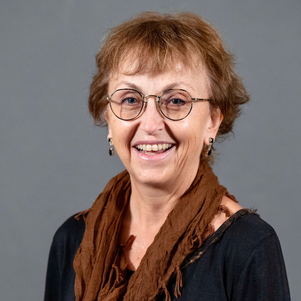

<style>
	.page_wise_banner {
		background-image: url('assets/img/banner/bg-9.jpg');
		background-position: center
	}
</style>


<style>
	.speaker-card {
		text-align: center;
	}

	.speaker-card img {
		width: 200px;
		height: 200px;
		object-fit: cover;
		border-radius: 50%;
	}


	.speaker-card p {
		margin-bottom: 10px;
		text-align: left; /* Align paragraphs to the left */
	}
	
</style>


<!--  SPEAKERS AREA START  -->
<section class="section-padding">
	<div class="container">
		<div class="row">
			<div class="col-lg-12 col-md-12 col-sm-12">
				<h2>Keynote Speakers</h2>
			</div>
		</div>
		
		<div class="row">
			<div class="col-lg-6 col-md-6 col-sm-12 mb-4">
				<div class="speaker-card">
					
					<h3>Dora Angelaki</h3>
					<div class="speaker-links">
						<a href="https://twitter.com/" target="_blank"><i class="fab fa-twitter"></i></a>
						<a href="https://scholar.google.com/citations?user=u5KcrAwAAAAJ" target="_blank"><i class="fab fa-researchgate"></i></a>
						<a href="https://angelakilabnyu.org/ourteam/" target="_blank"><i class="fas fa-globe"></i></a>
					</div>
					<h5>Tandon School of Engineering, New York University, New York, USA</h5>
					<h5>Center for Neural Science, New York University, New York, USA</h5>
					<h5>Title of the talk: Belief embodiment through eye movements facilitates memory-guided navigation </h5>
					<p>
					Dora Angelaki is a Professor at the Center for Neural Science and the Tandon
					school of Engineering at New York University. She holds a diploma and Ph.D.
					degrees in electrical and biomedical engineering from the National Technical University
					of Athens, Greece, and the University of Minnesota. Interested in understanding the
					principles that make our brain so much better than man-made machines and AI,
					she uses naturalistic foraging tasks that combine uncertainty, spatial navigation,
					decision-making and episodic memory to understand inference in the brain. She explores
					how task-relevant latent variables and multisensory signals flow dynamically across
					brain areas to generate perception and cognition, how hierarchical causal inference
					is implemented in the brain, how beliefs propagate through the network, and how internal
					states modulate this information flow. </p>
				</div>
			</div>

			<div class="col-lg-6 col-md-6 col-sm-12 mb-4">

				<div class="speaker-card">
					
					<h3>Valerio Mante</h3>
					<div class="speaker-links">
						<a href="https://twitter.com/" target="_blank"><i class="fab fa-twitter"></i></a>
						<a href="https://www.researchgate.net/profile/Valerio-Mante" target="_blank"><i class="fab fa-researchgate"></i></a>
						<a href="https://ee.ethz.ch/the-department/faculty/professors/person-detail.NjI5MDU=.TGlzdC80MTEsMTA1ODA0MjU5.html" target="_blank"><i class="fas fa-globe"></i></a>
					</div>
					<h5>Institute of Neuroinformatics, ETH Zürich, Zürich, Switzerland</h5>
					<h5>Title of the talk: Neural population dynamics of decisions and actions</h5>
				</br>
					<p> Valerio Mante is a group leader at the Institute of Neuroinformatics. Dr. Mante obtained a master's degree in
						physics and a Ph.D. in neuroscience from ETH Zurich. Subsequently, he was a postdoctoral fellow at
						Stanford University and the Howard Hughes Medical Institute. His laboratory uses a combination of
						experimental and computational approaches to investigate the role of prefrontal cortex in normal and
						impaired cognition (e.g. decision-making and attention). </p>
				</div>
			</div>
			
			<div class="col-lg-6 col-md-6 col-sm-12 mb-4">
				<div class="speaker-card">
					
					<h3>Tom Froese</h3>
				
					<div class="speaker-links">
						<a href="https://twitter.com/DrTomFroese" target="_blank"><i class="fab fa-twitter"></i></a>
						<a href="https://www.researchgate.net/scientific-contributions/Tom-Froese-70670755" target="_blank"><i class="fab fa-researchgate"></i></a>
						<a href="https://groups.oist.jp/ecsu" target="_blank"><i class="fas fa-globe"></i></a>
					</div>
					<h5>OIST, Okinawa, Japan</h5>
					<h5>Embodied Cognitive Science Unit, Okinawa, Japan</h5>
					<h5>Title of the talk: Making Mind Matter </h5>
					<p> Froese is a German cognitive scientist with a background in computer science and complex systems.
						He is based in Japan at the Okinawa Institute of Science and Technology Graduate University,
						where he heads the Embodied Cognitive Science Unit. The Unit investigates the interactive basis
						of life and mind with a variety of methods, including evolutionary robotics, agent-based modeling,
						sensory substitution interfaces, artificial neural networks, and virtual reality. Froese is 
						particularly known for his contributions to the field of artificial life and to the enactive approach
						to cognitive science. Currently he is coordinating the creation of an EEG hyperscanning lab and 
						developing a novel approach to quantifying the efficacy of agency called irruption theory.</p>
				</div>
			</div>

			<div class="col-lg-6 col-md-6 col-sm-12 mb-4">

				<div class="speaker-card">
					
					<h3>Asya Achimova</h3>
					<div class="speaker-links">
						<a href="https://twitter.com/AAchimova" target="_blank"><i class="fab fa-twitter"></i></a>
						<a href="" target="_blank"><i class="fab fa-researchgate"></i></a>
						<a href="https://asya-achimova.github.io/" target="_blank"><i class="fas fa-globe"></i></a>
					</div>
					<h5>Department of General and Computer Linguistics, University of Tübingen, Germany</h5>
					<h5>Neuro-Cognitive Modeling Group, Cognitive Science Center, University of Tübingen, Germany</h5>
					<p> Asya Achimova focuses on modeling human communication as a way to understand the interaction between
						cognition and language. She uses formal and experimental tools to uncover how speakers infer
						each other's background beliefs and assumptions in conversation. She further investigates
						how these assumptions shape the choice of what to say and how to formulate it. She applies
						tools from probabilistic pragmatics to develop quantitative and qualitative predictions that
						capture these processes. </p>
				</div>
			</div>

			<div class="col-lg-6 col-md-6 col-sm-12 mb-4">

				<div class="speaker-card">
					
					<h3>Carlos Zednik</h3>
					<div class="speaker-links">
						<a href="https://twitter.com/CarlosZednik" target="_blank"><i class="fab fa-twitter"></i></a>
						<a href="https://www.researchgate.net/profile/Carlos-Zednik" target="_blank"><i class="fab fa-researchgate"></i></a>
						<a href="http://explanations.ai/" target="_blank"><i class="fas fa-globe"></i></a>
					</div>
					<h5>Philosophy of Artificial Intelligence, Eindhoven University of Technology, Eindhoven, Netherlands</h5>
					<h5>Eindhoven Artificial Intelligence Systems Institute, Eindhoven, Netherlands</h5>
					<h5>Title of the talk: Why Explainable AI needs Cognitive Models</h5>
					<p> Carlos Zednik is a cognitive scientist with an academic background in philosophy and computer science.
						He focuses on philosophical questions about artificial intelligence (AI) with a goal of developing
						best practices for explainable AI in the context of machine learning. His work also intersects 
						psychology and neuroscience with an aim to apply mathematical models to better describe cognitive
						mechanisms.</p>
				</div>
			</div>

			<div class="col-lg-6 col-md-6 col-sm-12 mb-4">

				<div class="speaker-card">
					
					<h3>Marieke Woensdregt</h3>
					<div class="speaker-links">
						<a href="https://twitter.com/mariekewoe" target="_blank"><i class="fab fa-twitter"></i></a>
						<a href="https://www.researchgate.net/profile/Marieke-Woensdregt" target="_blank"><i class="fab fa-researchgate"></i></a>
						<a href="https://marieke-woensdregt.github.io/" target="_blank"><i class="fas fa-globe"></i></a>

					</div>
					<h5>Max Planck Institute for Psycholinguistics, Nijmegen, Netherlands</h5>
					<h5>Donders Center for Cognition, Radboud University, Nijmegen, Netherlands</h5>
					<h5>Title of the talk: Social Cognition and Social Interaction in Language Use</h5>
					<p> Marieke Woensdregt is a computational cognitive scientist who studies the complex interplay between language,
						inference, social cognition, and social interaction. She uses formal and computational modelling to better
						understand and explain the cognitive processes that allow humans to use language efficiently but also flexibly.</p>


				</div>
			</div>
		</div>
	</div>
</section>
<!--  SPEAKERS AREA END  -->

<!--  ABOUT AREA END  -->
